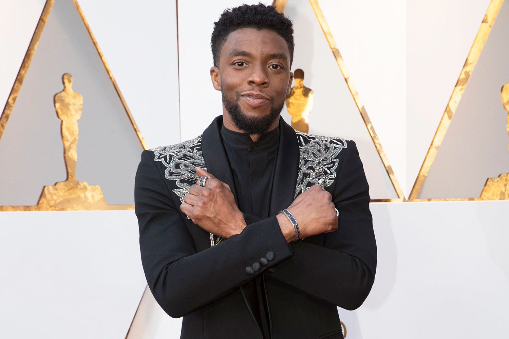

Famous Actors in Marvel Movies
Robert Downey Jr. - Iron Man (Tony Stark)

Robert Downey Jr. is an American actor who portrayed the iconic character Tony Stark, also known as Iron Man, in the Marvel Cinematic Universe (MCU). He played the role from the first Iron Man film released in 2008 until Avengers: Endgame in 2019.
Chris Evans - Captain America (Steve Rogers)

Chris Evans is an American actor known for his portrayal of Steve Rogers, also known as Captain America, in the MCU. He appeared as Captain America in several films, including Captain America: The First Avenger, The Avengers, and Avengers: Endgame.
Scarlett Johansson - Black Widow (Natasha Romanoff)
Scarlett Johansson is an American actress who played the character Natasha Romanoff, also known as Black Widow, in the MCU. She first appeared as Black Widow in Iron Man 2 and reprised the role in multiple Marvel movies, including The Avengers, Captain America: The Winter Soldier, and Avengers: Endgame.
Tom Holland - Spider-Man (Peter Parker)

Tom Holland is an English actor known for his portrayal of Peter Parker, also known as Spider-Man, in the MCU. He first appeared as Spider-Man in Captain America: Civil War and reprised the role in Spider-Man: Homecoming, Spider-Man: Far From Home, and Avengers: Infinity War and Avengers: Endgame.
Chris Hemsworth - Thor

Chris Hemsworth is an Australian actor who portrayed the character Thor in the MCU. He first appeared as Thor in the standalone film Thor and has since appeared in multiple Marvel movies, including The Avengers and Thor: Ragnarok.

Chadwick Boseman
Character Name: T'Challa / Black Panther
Chadwick Boseman portrayed the character T'Challa, also known as Black Panther. T'Challa is the king of the fictional African nation of Wakanda and possesses enhanced abilities due to consuming the heart-shaped herb. Boseman's portrayal of Black Panther garnered critical acclaim and made a significant impact on representation in superhero movies.
Benedict Cumberbatch
Character Name: Dr. Stephen Strange / Doctor Strange
Benedict Cumberbatch played the role of Dr. Stephen Strange, also known as Doctor Strange. Dr. Strange is a brilliant neurosurgeon who, after a career-ending accident, becomes a powerful sorcerer under the guidance of the Ancient One. Cumberbatch's portrayal captured the character's journey from arrogance to a skilled protector of the mystical arts.

Elizabeth Olsen
Character Name: Wanda Maximoff / Scarlet Witch
Elizabeth Olsen portrayed the character Wanda Maximoff, also known as Scarlet Witch. Scarlet Witch possesses reality-altering powers and is a complex character who goes through various transformations throughout the Marvel Cinematic Universe. Olsen's performance showcased Wanda's emotional depth and her struggle to control and understand her abilities.
Home